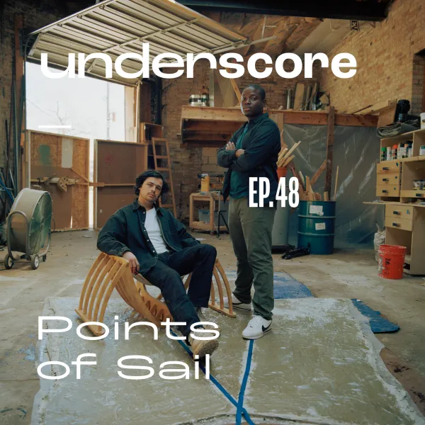
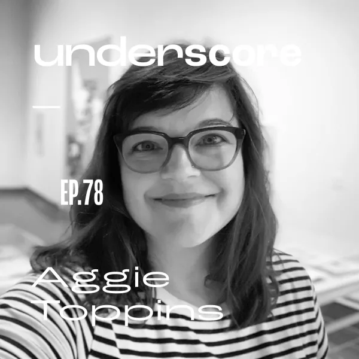
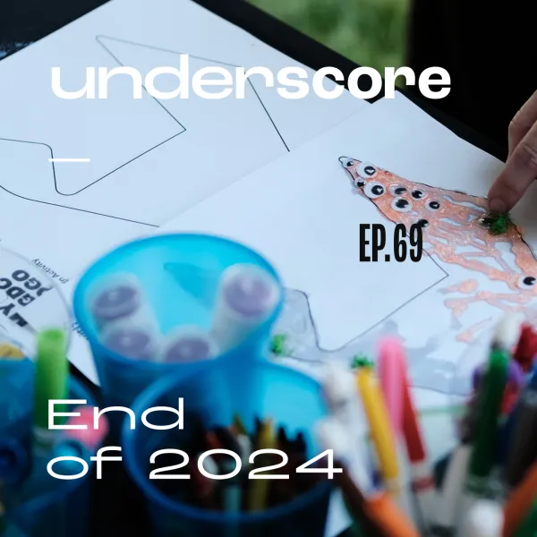
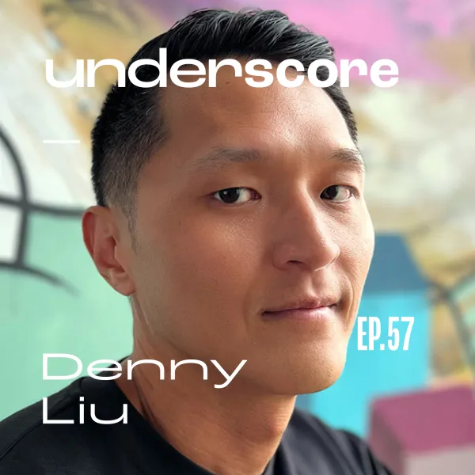
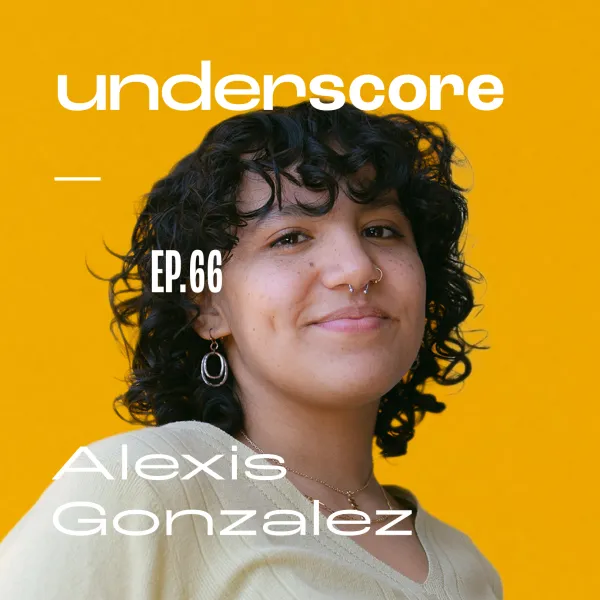
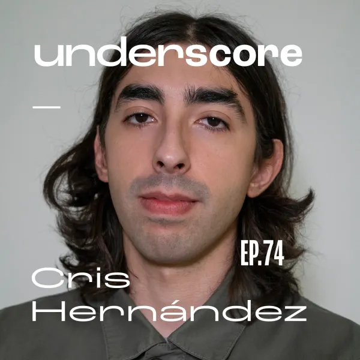
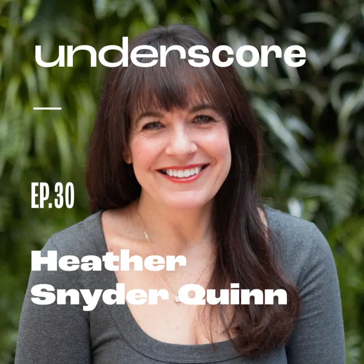
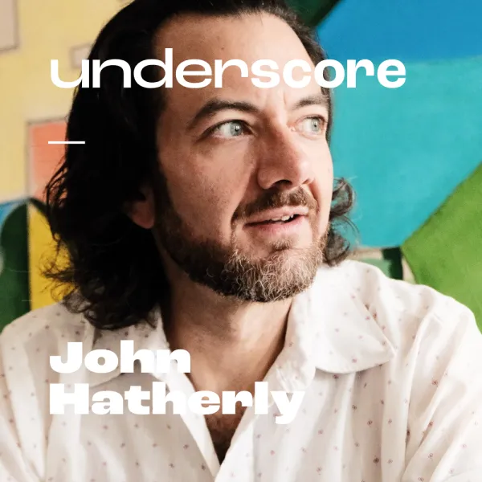
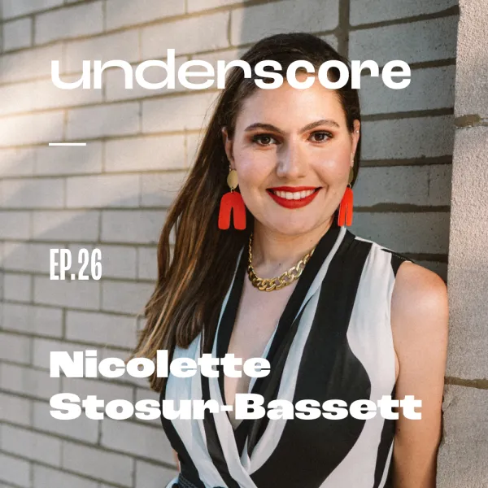
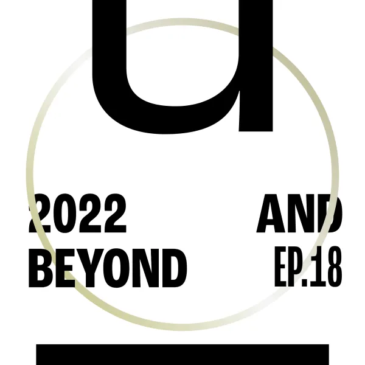

Artifact / Journalism / Podcast
Underscore
One of Chicago’s leading design podcasts — an ongoing archive of conversation with designers, thinkers, and practitioners in Chicago and beyond. With 115+ episodes, the show captures the stories and processes behind the work.
Episodes move across studio ownership, creative identity, race and design, typography, pedagogy, cultural production, AI, and what it means to practice with intention — drawing out the stories and perspectives that rarely make it into the formal record.
Client
Chicago Graphic Design Club
Medium
Journalism / Podcast
Year
Ongoing
Acknowledgements
OP/AL
Editing / Producer / Host









